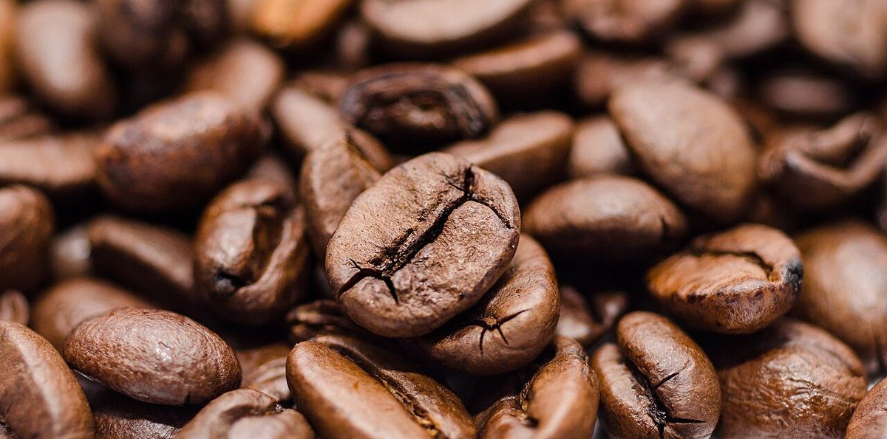
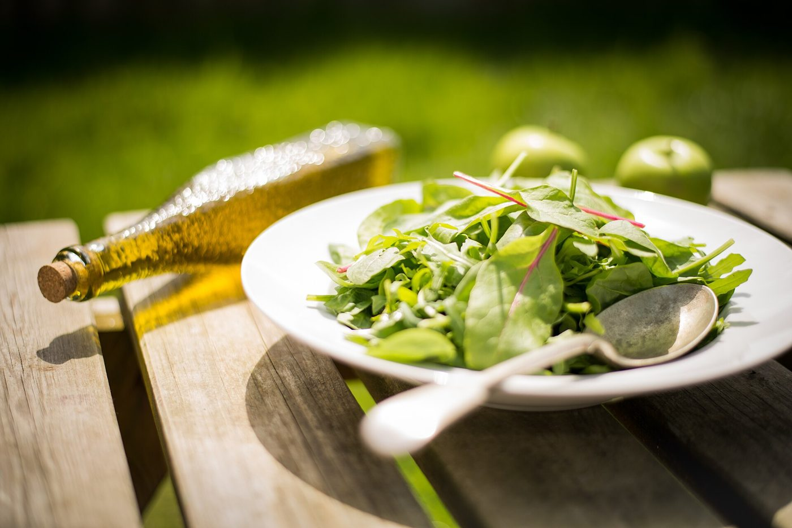
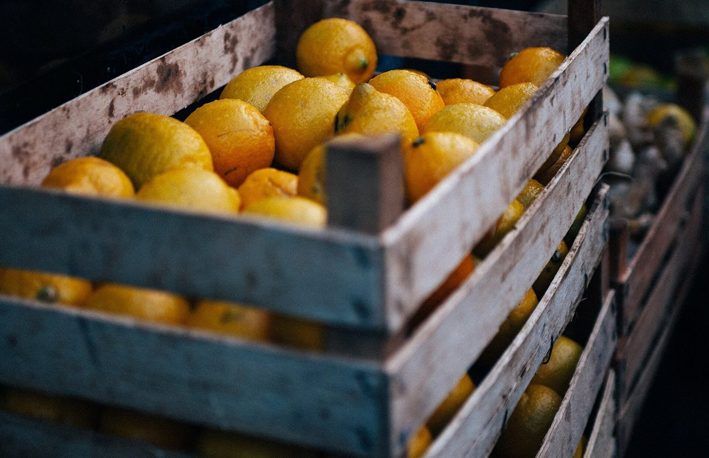

制作側の連想
ミルクピッチャーの部位を、配置図にしてみる
このサイトは、注ぎ口と持ち手のあるミルクピッチャーを図にしたつもりで作りました。六つの部位に番号をふり、上の図と並べています。制作側の連想で、お店の理念・由来とは無関係です。実際の製品の仕様を示すものでもありません。
凡例
六つの部位
- 1注ぎ口中身を細く注ぐための、胴の縁から前に張り出した三角の部分。
- 2縁(リム)開口部をぐるりと囲む、補強もかねた丸い縁取り。
- 3胴(ボディ)中身をためておく、ふくらみのある本体の部分。
- 4持ち手(ハンドル)指をかけて持ち上げるための、弧を描く取っ手。
- 5持ち手の付け根取っ手を胴に留めている、上下二か所の接合部。
- 6底(ベース)テーブルに置いたときに全体を支える、平らな面。



ギャラリー(イメージ)
パンとコーヒーの写真




写真はパンやコーヒーなどのイメージです。お店のものではなく、お店で提供している商品を示すものでもありません。
ご案内
お店のこと(確認できたものだけ)
| 所在地 | 〒069-0813 北海道江別市野幌町36-12 |
|---|---|
| 電話 | 準備中 |
| 営業時間 | 準備中 |
| 定休日 | 準備中 |
| ご予約 | 準備中 |
| 駐車場 | 準備中 |
| SNS | Instagram @kissafaro |